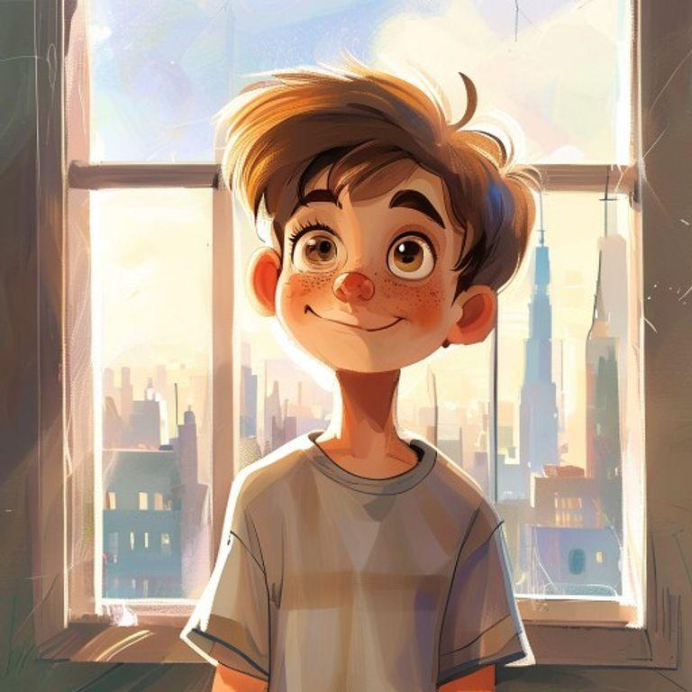
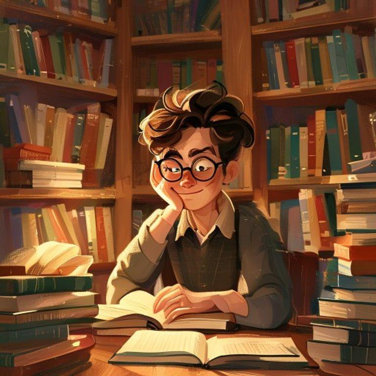
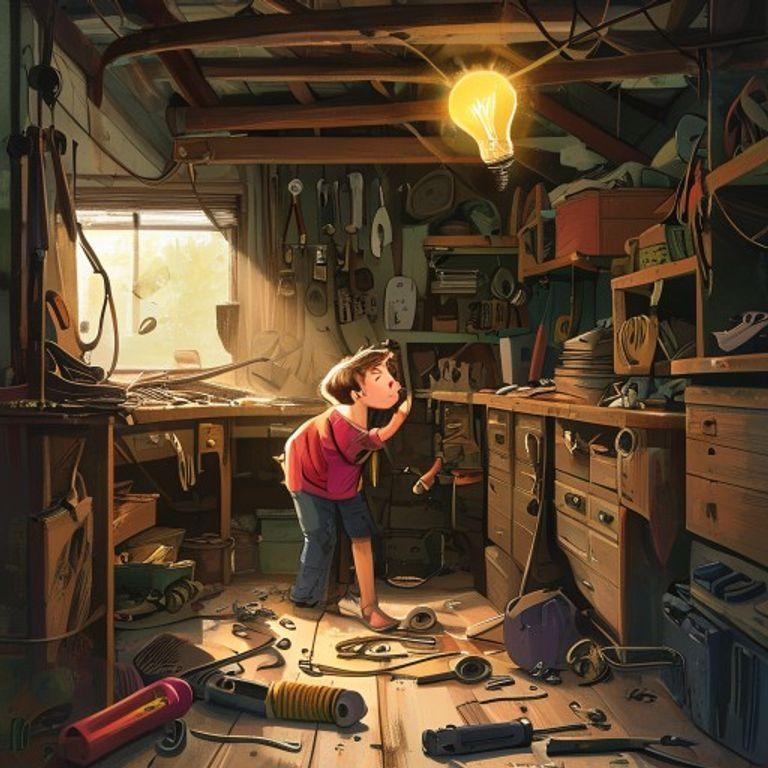
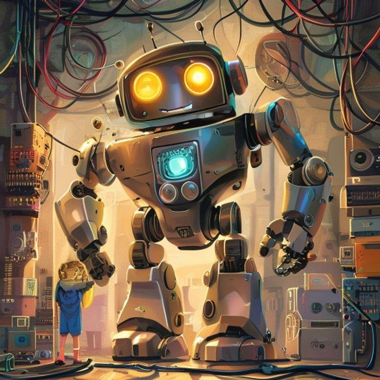
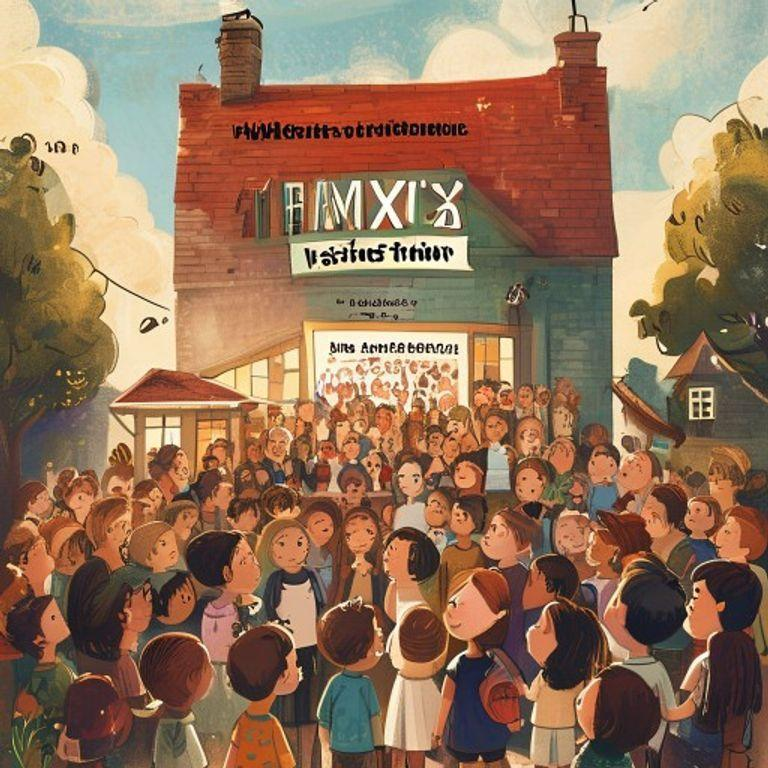
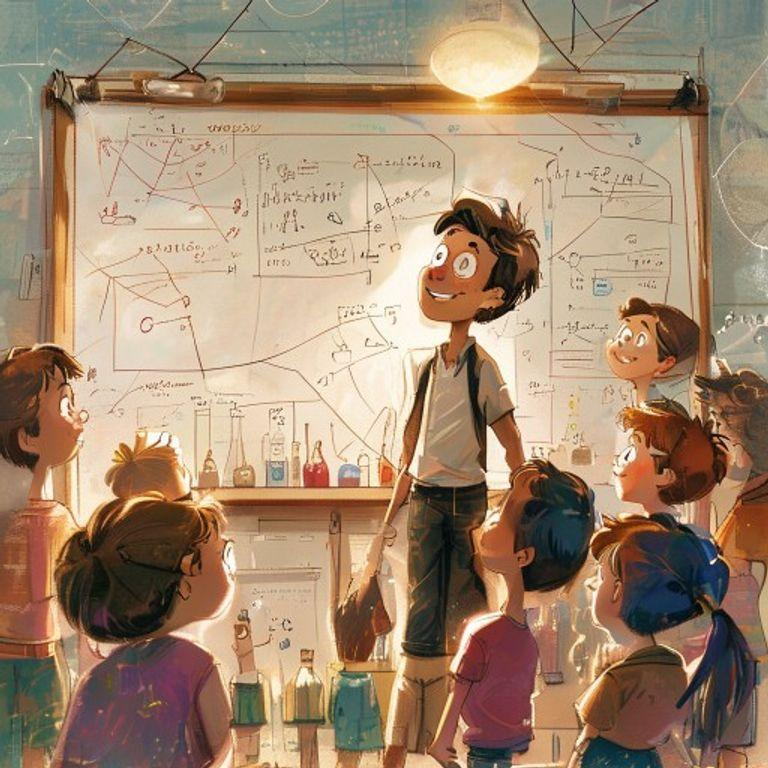
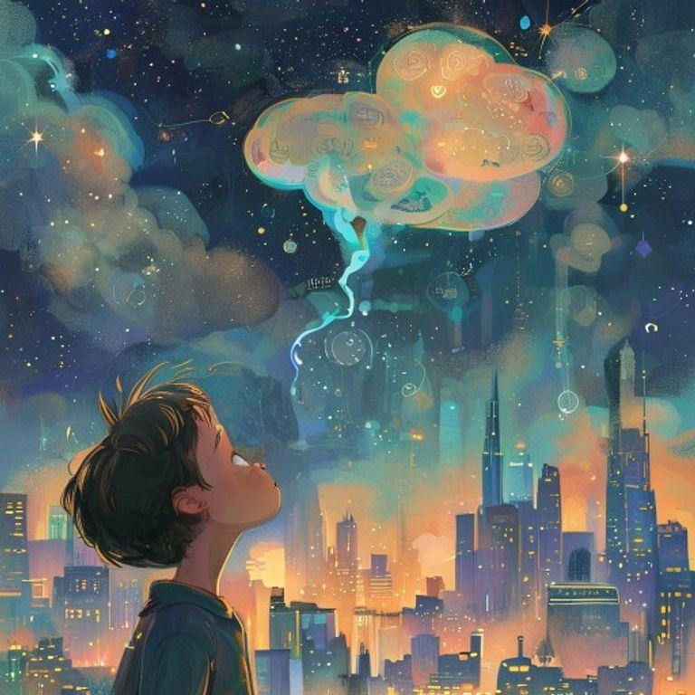

The Curious Mind of Max


Once upon a time, in a world full of wonder, there lived a boy named Max. Max was a very special boy, with a mind full of curiosity and a heart full of kindness.

Max loved to read books and learn new things. He spent most of his free time in the library, devouring books on science, history, and technology.

One day, while browsing through a book on robotics, Max had an idea. He decided to build his own robot, using scraps and parts he found around the house.

With the help of his trusty toolkit and a lot of trial and error, Max built a robot that could move, talk, and even do chores for him.
Max named his robot 'Zeta' and the two quickly became inseparable. Zeta helped Max with his homework, cleaned his room, and even assisted him in the kitchen.

As news of Max's incredible robot spread, people from all over the city came to visit him and learn from his creation.

Max realized that his curiosity and creativity had not only improved his own life but also inspired others to pursue their passions and dreams.

And from that day on, Max continued to explore, invent, and innovate, always remembering that with great curiosity comes great possibility.